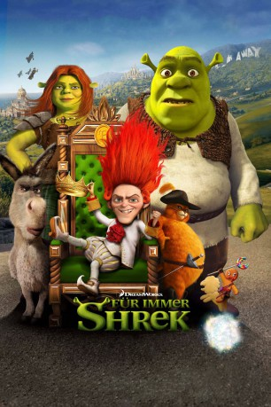

Alternativ: Shrek Forever After
 
 IMDB-Wertung: 6.4 / 10
IMDB-Wertung: 6.4 / 10  Metascore:
Metascore: 
Drei Kinder, viele Freunde und eine Frau, die umsorgt und geliebt werden wollen, lassen dem Oger keine Zeit für alte Zeiten. Da kommt das Angebot von Rumpelstilzchen gerade recht, aber nicht ohne Nebenwirkungen. Einen Tag darf der Oger richtig Shrek-lich sein, doch dafür bekommt Rumpelstilzchen einen Tag aus Shreks Leben. Er wählt den Geburtstag, womit es Shrek nie gegeben hat und das Königreich Weit Weit Weg zu Rumpels düsterem Reich wird. Es sei denn, Shrek kann den Zauber rückgängig machen - in nur einem Tag.
Jahr: 2010
Dauer: 93 Minuten
FSK: 6
Land: USA Studio: Paramount PicturesTonspuren: DD5.1 - ,
Untertitel: Deutsch, Englisch,
Auflösung: 1080p (1920x816) Größe: 3686 MB
Genre: Komödie, Abenteuer, Fantasy, Animation/Trick, Familie
Regisseur: Mike Mitchell
Drehbuch: Dalton Trumbo
Soundtrack:
Darsteller:
Datei: X:\Kinder Collections\Shrek\Shrek 4 - Für immer Shrek (2010, FSK6, 1920x816) 3D.mkv seit 14.06.2016
Festplatte: Kinder-Filme+Trick
 Es gibt insgesamt 13 Filme in der Gruppe 'Kinder Collections\Shrek'
Es gibt insgesamt 13 Filme in der Gruppe 'Kinder Collections\Shrek'